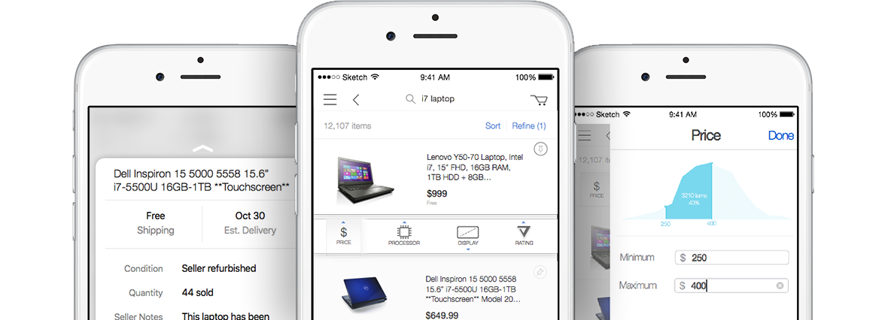
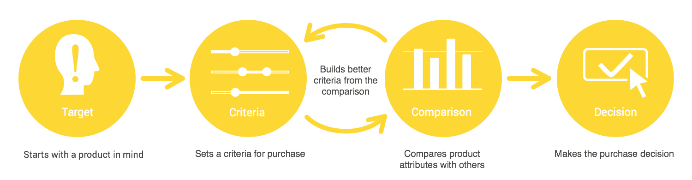

A better tool to compare different attributes.
Course Project, Partnered with ebay
Oct. 2015, 2 Weeks
Information overload and unlimited choices make anxious shoppers harder to make choices.
User flow
User needs
The seekers want to find all the options meet their criteria.
The seekers want to compare attributes between options.
The seekers want to make sure they made the right choice.
Pin item for comparison
The user can pin the interested item on the top of the screen and compare factors with other items.
Show comparison of factors
While the user scrolls the list, there are indicators showing the differences between the pinned item and the item at the top of the scroll list
Criteria list
User can swipe to see detail information about each factor. User can also customize factors in the heading.
Visualized filter
When setting criteria, users can see a brief visualization of the result of this criteria, including how many items will be in the result.
Third-Party rating
User can view item rating from their trusted third-party website. This not only redeems the reality that ebay doesn't have a rating system, but also offers more trust since the rating is from users trusted website.
We had an extra challenges in this project. We are assigned one fine art student with little experience in UX/UI in our team. It was the first time we ever worked with fine art people. We were glad that the new member really engaged into design process, rather than just take charge of visual part. It's quite interesting to see how people from different background think about a user experience problem.